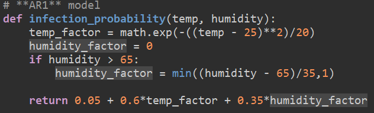

Create
development milestones:
log 1:
- I got the microbit up and running and taking in data from the DHT11 sensor, this meets the BR1 a2) requirement of an analogue input. I did this by using the microbits "dht11/dht22" extension in microbit makecode
log 2:
- On button A pressed finaly works to start the system, this meets the BR1 a1) requirement of an digital input and the system runs completely automatically after button A is pressed on the microbit which satisfies BR1 c)
log 3:
- The microbit now is able to show icons, a "X" and "✔" depending whether the humidity is above or below 65, this meets the BR3 and BR1 b) requirements, as the microbit is able to respond to the changing environment as it displayes different icons, it also covers the requirement of having at least one primary output as the leds are a digital output.
- The microbit was tested using a hairdryer to silulate wind and heat and to simulate humidity I used my breath to rise the humidity, the micro bit responded with correct icons showing when the conditions were dangerous.
- I decided to use the "X" and "✔" as my warning system to inform and warn when the conditions are dangerous for the trees by displaying an "X" when the conditions are dangerous and a "✔" when the conditions are safe, this satisfies AR 3)
Log 4:
- The model has been finalised today using and the math library in Thonny, the model uses the data collected in the csv and puts it through the fomula that I made where the probability of fungus spreading is calculated using the temp in a bell curve where 25 is at the top and for when the humidity passes 65 the probablity further increases and at the end it shows a graph using the "matplotlib" library in Thonny, this satisfies requirement AR1)
log 5:
- The what if scenarios finaly work using "pygame" in Thonny. There are two scenarios, 1 shows how the fungus would spread if it was really hot but dry; like what if there was a drought, and scenario 2 shows the fungus spreading if both the temperature was high and the humidity; like what if there was a storm. This meets the AR2 requirement.
- The two scenarios are shown on a square board with different tree images for healthy and unhealthy trees.
log 6:
- To finish the python code off i decided to include a graph of the result from the two scenarios, this helps to make it easier to interpret and analyze the difference in the scenarios.
Testing
For this project I did white box testing I know all the ins and outs of my code, I need manual testing for the microbit to check if the button functionality works, I also tested if the right icons are being displayed depending on the environment the microbit is in. I need functional testing to see if the code overall satisfies the needed functions,i need to check the boundry inputs to see if everything works as expected.
Test Tables:
Manual testing for microbit
| Test ID | Description | Test Data |
Expected Result |
Actual Result |
Passed: Y/N |
|---|---|---|---|---|---|
| 1 | Testing if microbit displayes anything before button A is pressed | nothing pressed | no lights on microbit showing | no lights on microbit showing | Y |
| 2 | test if leds show icon after button A is pressed; looking at led display | Button A is pressed | Icon shows up on led display either an "X" or "✔" | Icon shows up on led display either an "X" or "✔" | Y |
| 3 | test if microbit stops after button B is pressed; looking at leds | Button B is pressed | No icon shows up on led display | No icon shows up on led display | Y |
| 4 | Test if microbit stops after button B is pressed; looking at information flowing in through the USB | Button B is pressed | No icon shows up on led display | No icon shows up on led display | Y |
| 5 | Test if microbit stops after button B is pressed; looking at information flowing in through the USB | Button B is pressed | No icon shows up on led display | No icon shows up on led display | Y |
Functional testing for microbit
| Test ID | Description | Test Data |
Expected Result |
Actual Result |
Passed: Y/N |
|---|---|---|---|---|---|
| 1 | test boundry input, test if correct icon for over 65 humidity shows on led display | humidity = 65 | "X" icon displayed | "X" icon displayed | Y |
| 2 | test boundry input, test if correct icon for under or equal to 65 humidity shows on led display | humidity = 65 | "✔" icon displayed | "✔" icon displayed | Y |
| 3 | Test if correct temperature data is being sent through the USB by the DHT11 sensor | Indoor conditions | temperature is around 19 degrees | temperature around 22 degrees | N |
| 4 | Test if correct humidity data is being sent through the USB by the DHT11 sensor | Indoor conditions | Humidity is around 40-50 | Humidity is around 40-50 | Y |
Problems Encountered:
I struggled for a while trying to figure out the alarm sistem for my microbit as whenever I tried to use sound it would break my code. the sensor would completely stop tecording more data after the alarm was triggered which is something i didnt want for my project.
Another problem i faced was during the creation of my model as i needed to figure out a way to be able to use a backup csv file since when the project is handed up the correctors dont have the microbit circuits with them so they cant get the data in through a USB from the microbit.
Model breakdown:

The function calculates the probability of the fungus spreading by using temperature and moisture in the formula, due to the best living conditions of the fungus peak at 25 degrees celcius and as the temperature continues to increas the fungus actualy starts to slow down and spread less therefore, I have created a bell curve to support the realistic life cycle of the fungus that I researched in the investigation stage of the project.
The bell curve lets us calculate the spread more realisticaly, when the temperature is low the spread is low, when the temperature reaches 25 the spread has the highest spread chance and when the temperature rises even higher the spread chance goes back down as the high temperature doesnt let the fungus thrive.
The huidity factor works by first minising 65 from humidity (humidity-65) to normalises the range then dividing by 35 creates a fraction and "min" ensures it does not exceed 1
Lastly the two factors are combined where the base chance of the fungus spreading is 0.05 because there is always a chance, and 0.6 is multiplied by the temperature factor as it is a major part of the fungus being able to spread, and lastly 0.35 is multiplied by the humidity factor to complete the formula for the probability of the fungus spreading.
this model is used to calculate the probability of fungus spreading and therefore how major the risk for the trees in the area to contract the desease.